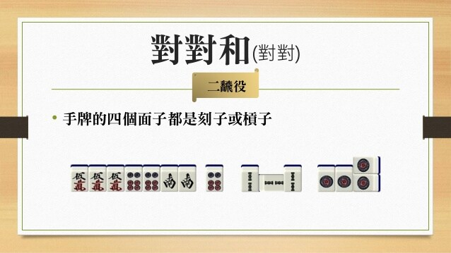
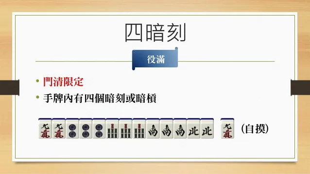

上面導覽列的連結都可以點點看~
右邊是日麻的基礎教學~
(因為滑動頁面不一定從頭開始，等待時間可以看看下面役種介紹~)
下面我列了所有的役種，滑鼠放在上面就會出現說明
- 立直
- 一發
- 斷么九
- 自風牌
- 場風牌

- 三元牌
- 門清自摸和
- 平和
- 一盃口

- 搶槓
- 嶺上開花
- 海底撈月
- 河底撈魚
- 兩立直
- 三色同刻
- 三槓子
- 對對和

- 三暗刻
- 小三元
- 混老頭
- 七對子

- 混全帶么九
- 一氣通貫
- 三色同順
- 兩盃口
- 純全帶么九
- 混一色
- 清一色
- 流局滿貫
- 天和
- 地和
- 大三元
- 四暗刻

- 字一色

- 綠一色
- 清老頭
- 國士無雙
- 小四喜

- 四槓子
- 九蓮寶燈
- 四暗刻單騎
- 國士無雙十三面

- 大四喜
- 純正九蓮寶燈
日本麻將教學
這是一個介紹日本麻將基礎的教學網站(這裡特別感謝星野大大提供素材) 透過下面的圖片帶你一步一步認識日麻，讓我們繼續看下去吧~
首先，先讓你認識一下日麻的基本用具吧!
這些就是打日麻會用到的道具~ (當然如果你是打線上日麻的就只需要一台電腦)
接下來要知道如何開始新的一局
每局遊戲開始時都要經過這樣的程序唷~ (不過線上日麻的話會自動幫你洗牌、堆牌、發牌唷) (線上日麻再加一分!)
再來是最重要的!什麼是胡牌呢(胡牌就是爽啦)
原來胡牌的是想辦法讓手牌達成胡牌型呀! 要記得四面子一雀頭的一般型是最常見的唷~ (畫筆記，考試會考)
那在拿到牌後該做些甚麼來達到胡牌呢?
也就是說拿到牌後，要先整理好牌 接著就會按順序每個人輪流摸牌打牌~ (真巧，線上日麻也會自動幫你理牌唷) (線上日麻好感度突破天際了!!!)
不過，牌都只能靠自己摸嗎...?
所以除了靠自己摸牌以外 還可以從別人手中透過吃碰槓拿來想要的牌唷! 透過這些方式想辦法達成胡牌型吧~
接下來是這個日麻教學的最後一部分 也是日麻非常重要且有趣的元素:役種
如果沒有役的話，即使你達成了胡牌型，你還是不能胡牌的! 那役種總共有哪些呢?
是不是有點眼花撩亂呀? 那我們就先介紹幾個吧!
記住了嗎~立直、斷么九及役牌 這些基本的役種是新手必備! 而寶牌雖然不是役，但是有其他役時可以讓你獲得更多點數唷~
除了上面介紹的這些，還有許多的役沒介紹到 可以看看左邊的框框~滑鼠放上去就會跑出介紹唷!
那我們的教學在這裡也告一段落啦 如果對日麻有興趣的朋友 可以點選左上角選單的線上平台直接玩一場看看! (初學者建議雀魂唷) 另外選單裡也有日麻youtuber的資訊 歡迎大家多去了解~~~
謝謝觀賞!
資料來源: https://www.slideshare.net/ssuserb66376/presentations https://qq.yh31.com/sx/lt/90675.html